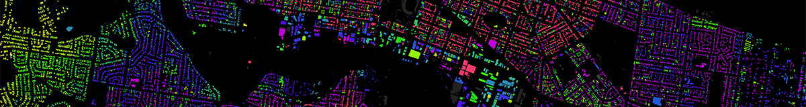
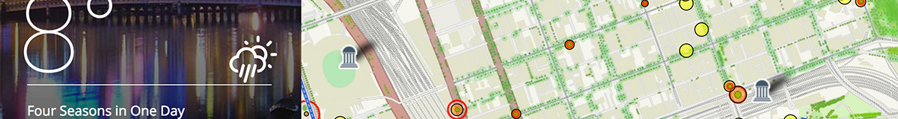
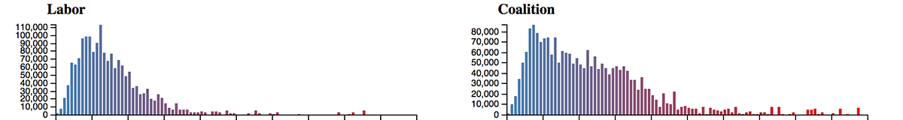
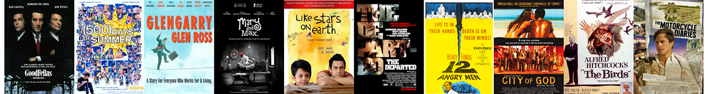
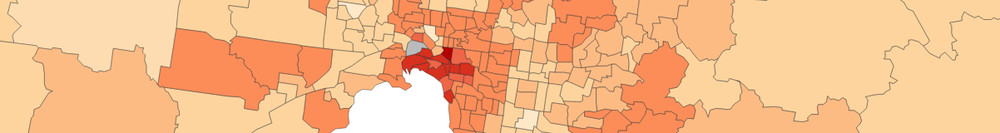
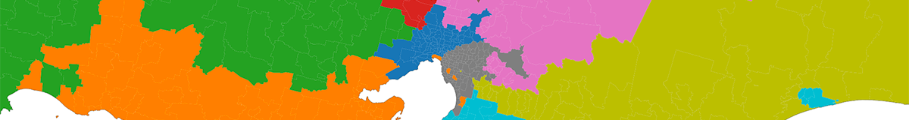

Geelong Buildings by Age

July 13, 2014
Living, Breathing Melbourne

July 13, 2014
Australian 2013 Federal Election Analysis

December, 2013
ELO Movie Ranking Game

November 4, 2013
Australian Census Explorer

June 2, 2013
Australian Postcode Decoder

April 14, 2013